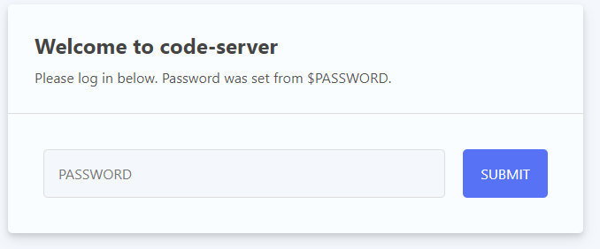
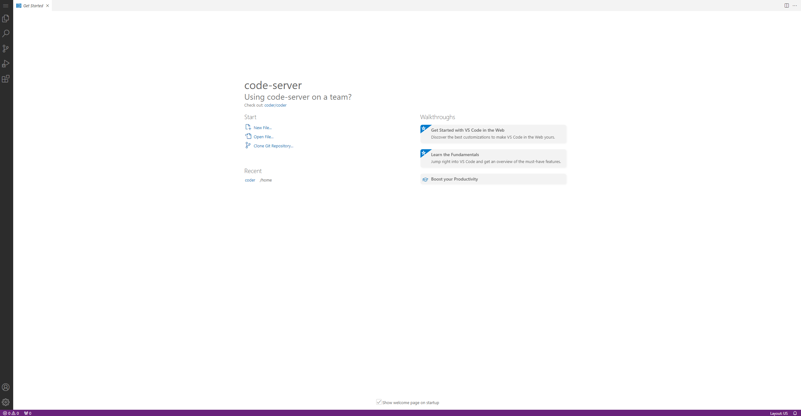
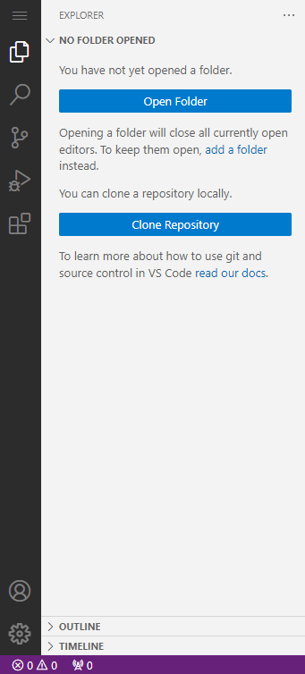
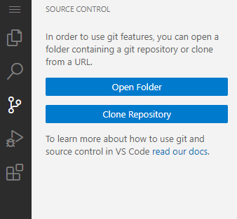
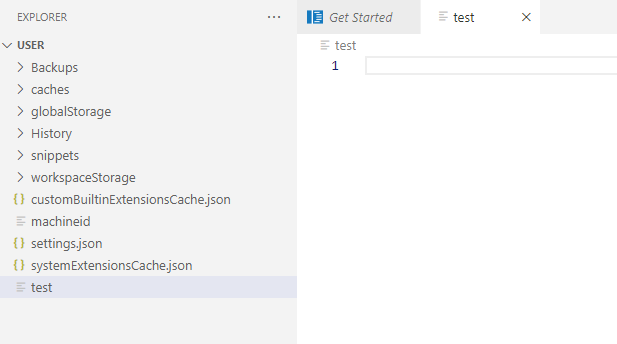

УСТАНОВКА ОБЛАЧНОЙ IDE-ПЛАТФОРМЫ CODE-SERVER
УСТАНОВКА ОБЛАЧНОЙ IDE-ПЛАТФОРМЫ CODE-SERVER19 ноября, 2022 12:22 пп 45 views | Комментариев нет
Development | Amber | Комментировать запись
С переходом инструментов для разработчиков в облако растет потребность в создании и внедрении облачных платформ IDE (Integrated Development Environment, интегрированная среда разработки). Облачные IDE позволяют командам работать в единой среде в режиме реального времени, это сводит к минимуму несовместимости и повышает производительность. Облачные IDE, которые доступны в браузерах, можно использовать с любого современного устройства.
code-server — это Microsoft Visual Studio Code, запущенный на удаленном сервере и доступный прямо из браузера. Visual Studio Code – это современный редактор кода с интегрированной поддержкой Git, отладчиком кода, интеллектуальным автозаполнением, настраиваемыми и расширяемыми функциями. С помощью code-server вы можете использовать различные устройства с разными операционными системами и при этом всегда иметь под рукой согласованную среду разработки.
В этом туториале мы настроим облачную платформу IDE code-server и откроем ей доступ к домену, защищенному бесплатными TLS сертификатами Let’s Encrypt. В результате у вас будет установлена среда разработки Microsoft Visual Studio, доступная на домене и защищенная паролем.
Требования
1: Установка code-server
Сначала давайте установим code-server на своем сервере. Нужно загрузить последнюю версию и создать службу systemd (она будет поддерживать работу code-server в фоновом режиме). Также настроим политику перезапуска службы, чтобы code-server оставался доступным после возможных сбоев и перезагрузок.
Все данные code-server будут храниться в папке ~/code-server. Создайте её с помощью следующей команды:
mkdir ~/code-server
Затем перейдите в неё:
cd ~/code-server
Вам нужно перейти на страницу релизов code-server на Github и выбрать последнюю сборку для Linux (файл будет содержать linux в названии). На данный момент последняя версия — 4.8.2. Загрузите её с помощью wget:
wget https://github.com/coder/code-server/releases/download/v4.8.2/code-server-4.8.2-linux-amd64.tar.gz
Затем распакуйте архив:
tar -xzvf code-server-4.8.2-linux-amd64.tar.gz
Вы получите папку с исходным кодом code-server, название папки будет точно совпадать с именем исходного файла. Скопируйте её в /usr/lib/code-server, чтобы сделать её общисистемной:
sudo cp -r code-server-4.8.2-linux-amd64 /usr/lib/code-server
Создайте симлинк в /usr/bin/code-server, указывающий на исполняемый файл code-server:
sudo ln -s /usr/lib/code-server/bin/code-server /usr/bin/code-server
Далее создайте папку, в которой будут храниться пользовательские данные code-server:
sudo mkdir /var/lib/code-server
Теперь нужно создать службу systemd для обеспечения работы code-server в фоновом режиме.
Конфигурацию службы нужно хранить в файле code-server.service, в каталоге /lib/systemd/system, где systemd хранит все свои сервисы. Создайте файл с помощью текстового редактора (мы используем nano):
sudo nano /lib/systemd/system/code-server.service
Добавьте в него следующие строки:
[Unit]
Description=code-server
After=nginx.service
[Service]
Type=simple
Environment=PASSWORD=your_password
ExecStart=/usr/bin/code-server --bind-addr 127.0.0.1:8080 --user-data-dir /var/lib/code-server --auth password
Restart=always
[Install]
WantedBy=multi-user.target
Сначала в файле идёт описание сервиса. Затем указывается, что перед этой службой должен быть запущен nginx. После раздела [Unit] определяется тип сервиса (simple означает, что процесс должен быть просто запущен) и указана команда, которую нужно выполнить.
Также здесь указано, что глобальный исполняемый файл code-server должен быть запущен с несколькими специальными аргументами:
Не забудьте заменить your_password на ваш пароль. Следующая строка позволяет systemd перезапускать code-server при любых сбоях (аварийное завершение или остановка процесса).
Раздел [Install] указывает systemd, как запустить этот сервис при запуске сервера.
Сохраните и закройте файл.
Запустите службу server-code с помощью команды:
sudo systemctl start code-server
Убедитесь, что она правильно запустилась, проверив ее статус:
sudo systemctl status code-server
Получим такой вывод:
code-server.service - code-server
Loaded: loaded (/lib/systemd/system/code-server.service; disabled; preset: enabled)
Active: active (running) since Thu 2022-11-03 12:39:26 UTC; 5s ago
Main PID: 2670 (node)
Tasks: 22 (limit: 1116)
Memory: 90.9M
CPU: 799ms
CGroup: /system.slice/code-server.service
├─2670 /usr/lib/code-server/lib/node /usr/lib/code-server --bind-addr 127.0.0.1:8080 --user-data-dir /var/lib/code-server --auth password
└─2692 /usr/lib/code-server/lib/node /usr/lib/code-server/out/node/entry
Чтобы code-server запускался автоматически после перезагрузки сервера, включите службу с помощью следующей команды:
sudo systemctl enable code-server
Получите вывод, что симлинк был сгенерирован:
Created symlink /etc/systemd/system/multi-user.target.wants/code-server.service → /lib/systemd/system/code-server.service.
Итак, code-server загружен и доступен глобально. Также создан и включен сервис systemd, это добавило code-server в автозагрузку. Далее мы откроем доступ к нему на своём домене, настроив Nginx в качестве обратного прокси-сервера между посетителем и code-server.
2: Публикация code-server на домене
В этом разделе мы настроим Nginx в качестве обратного прокси-сервера для code-server.
Как вы уже знаете, файлы конфигурации сайта Nginx хранятся в /etc/nginx/sites-available и чтобы активировать их, нужно создать симлинки в /etc/nginx/sites-enabled.
Вы будете хранить конфигурацию code-server для настройки доступа к нему по вашему домену в файле code-server.conf, в каталоге /etc/nginx/sites-available. Начнем с создания этого файла:
sudo nano /etc/nginx/sites-available/code-server.conf
Добавьте в файл следующие строки:
server {
listen 80;
listen [::]:80;
server_name code-server.your-domain;
location / {
proxy_pass http://localhost:8080/;
proxy_set_header Upgrade $http_upgrade;
proxy_set_header Connection upgrade;
proxy_set_header Accept-Encoding gzip;
}
}
Замените code-server.your-domain на ваш домен.
В этом файле мы определили, что Nginx должен прослушивать HTTP-порт 80. Затем указали server_name, которое сообщает Nginx, какой домен будет принимать запросы и применять эту конфигурацию.
В блоке root location (/) указано, что запросы должны передаваться к code-server, который работает на localhost:8080. Следующие три строки (начиная с proxy_set_header) позволяют Nginx переносить некоторые заголовки HTTP-запросов, которые необходимы для правильного функционирования веб-сокетов – их широко использует code-server.
Сохраните и закройте файл.
Чтобы активировать эту конфигурацию сайта, нужно создать на нее симлинк в /etc/nginx/sites-enabled. Для этого выполните следующую команду:
sudo ln -s /etc/nginx/sites-available/code-server.conf /etc/nginx/sites-enabled/code-server.conf
Чтобы проверить правильность конфигурации, выполните команду:
sudo nginx -t
Получим следующий вывод:
nginx: the configuration file /etc/nginx/nginx.conf syntax is ok
nginx: configuration file /etc/nginx/nginx.conf test is successful
Нужно перезапустить Nginx, чтобы настройки вступили в силу:
sudo systemctl restart nginx
Теперь code-server установлен и доступен на вашем домене. На следующем шаг мы е защитим его с помощью бесплатного TLS-сертификата Let’s Encrypt.
3: Защита домена
В этом разделе мы защитим домен с помощью сертификата Let’s Encrypt, который получим с помощью клиента Certbot. После настройки code-server будет работать по протоколу HTTPS.
Во время начальной настройки мы включили ufw (Uncomplicated Firewall) и разрешили незашифрованный HTTP-трафик. Чтобы получить доступ к защищенному сайту, необходимо настроить брандмауэр на его прием. Для этого выполните следующую команду:
sudo ufw allow https
Вывод будет следующим:
Rule added
Rule added (v6)
Нужно перезагрузить брандмауэр, чтобы конфигурация вступила в силу:
sudo ufw reload
Вывод будет выглядеть так:
Firewall reloaded
Затем в браузере перейдите к домену, который вы использовали для code-server. Загрузится страница для входа на code-server:

code-server запросит пароль. Введите тот, который вы установили в предыдущем разделе, и нажмите Enter IDE. Вы войдете в code-server и получите доступ к графическому интерфейсу его редактора..

Теперь, когда вы убедились, что code-server правильно настроен и работает по вашему домену, можно установить сертификаты Let’s Encrypt TLS для его защиты с помощью Certbot.
Чтобы установить последнюю версию Certbot и его плагин для Nginx, выполните следующую команду:
sudo apt install certbot python3-certbot-nginx -y
Чтобы запросить сертификаты для вашего домена, выполните:
sudo certbot –nginx -d code-server.your-domain
Эта команда запускает certbot для запроса сертификатов для вашего домена. Вы передаете домен с параметром -d. Флаг –nginx указывает ему автоматически изменить конфигурацию сайта Nginx для поддержки HTTPS. Не забудьте заменить code-server.your-domain на ваш домен.
Если вы запускаете Certbot впервые, он попросит предоставить адрес электронной почты для срочных уведомлений и принять условия обслуживания EFF. Затем Certbot запросит сертификаты для вашего домена у Let’s Encrypt.
Вывод будет таким:
Requesting a certificate for code-server.your-domain
Successfully received certificate.
Certificate is saved at: /etc/letsencrypt/live/code-server.your-domain/fullchain.pem
Key is saved at: /etc/letsencrypt/live/code-server.your-domain/privkey.pem
This certificate expires on 2023-02-01.
These files will be updated when the certificate renews.
Certbot has set up a scheduled task to automatically renew this certificate in the background.
Deploying certificate
Successfully deployed certificate for code-server.your-domain.com to /etc/nginx/sites-enabled/code-server.conf
Congratulations! You have successfully enabled HTTPS on https://code-server.your-domain
- - - - - - - - - - - - - - - - - - - - - - - - - - - - - - - - - - - - - - - -
If you like Certbot, please consider supporting our work by:
* Donating to ISRG / Let's Encrypt: https://letsencrypt.org/donate
* Donating to EFF: https://eff.org/donate-le
- - - - - - - - - - - - - - - - - - - - - - - - - - - - - - - - - - - - - - - -
Этот вывод значит, что Certbot успешно сгенерировал сертификаты TLS и применил их к конфигурации Nginx для вашего домена. Теперь можно перезагрузить домен вашего code-server в браузере и увидеть замок слева от адреса сайта. Это значит, что соединение надежно защищено.
Давайте теперь разберём пользовательский интерфейс code-server.
4: Использование интерфейса code-server
Теперь попробуем некоторые функции интерфейса code-server. Поскольку code-server — это Visual Studio Code, работающий в облаке, он имеет тот же интерфейс, что и версия для настольных компьютеров.
В левой части IDE находится вертикальный ряд из шести кнопок, они представляют наиболее часто используемые функции боковой панели (Activity Bar):

Эта панель настраивается, и вы можете перемещать эти кнопки или удалять их с панели. По умолчанию первая кнопка открывает общее меню в виде выпадающего списка, а вторая кнопка (значок папки) открывает панель проводника, предоставляет древовидную навигацию по структуре проекта. Здесь можно управлять папками и файлами (создавать, удалять, перемещать и переименовывать). Кнопка увеличительного стекла — функция поиска и замены.
Далее идет система контроля версий (например Git). Visual Studio Code также поддерживает других провайдеров системы контроля версий.

Опция отладчика (треугольник с маленьким значком ошибки) предоставляет общие действия для отладки. Visual Studio Code поставляется со встроенной поддержкой отладчика среды выполнения Node.js и любого языка, который переносится в Javascript. Для других языков можно установить расширения для отладчика. Кнопка с четырьмя блоками, которая является последней на панели Activity Bar, предоставляет меню для доступа к расширениям на VSCode Marketplace.
Центральную часть графического интерфейса занимает редактор, который вы можете разделить вкладками для редактирования кода. Также можно изменить вид редактирования на сеточную систему или параллельные файлы.
Откройте code-server.your-domain/?folder=/var/lib/code-server/User в браузере, который загрузит существующую папку.
Выберите значок меню, затем выберите File, в котором вы создадите New Folder. Назовите файл и сохраните его в папке по умолчанию.
После сохранения файл будет доступен для просмотра на боковой панели Explorer. Создание папок происходит нажатием правой кнопкой мыши по боковой панели Explorer; здесь выберите New Folder. Вы можете развернуть папку, кликнув на ее название; перетащив файлы и папки в верхние части иерархии, вы переместите их в новое место.

Доступ к терминалу можно получить, нажав Terminal в раскрывающемся меню вверху и выбрав New Terminal. Также можете использовать сочетание клавиш, указанное в меню. Терминал откроется в нижней панели. Его рабочий каталог будет находиться в рабочей области проекта, которая содержит файлы и папки, показанные на боковой панели Explorer.
Подводим итоги
Теперь на вашем сервере есть защищенная сертификатами Let’s Encrypt универсальная облачная платформа IDE. Вы можете работать над проектами индивидуально или в команде. Установка облачной среды IDE освобождает ресурсы на локальном компьютере и позволяет масштабировать их при необходимости. За дополнительной информацией и подробными инструкциями по другим компонентам code-server обращайтесь к материалам Visual Studio Code.
Вконтакте
Google+